ELECTRIC WINDOWS
- Path
- Descriptions > 55 ELECTRICAL EQUIPMENT > 5505 INSTRUMENT/GAUGE ELECTRICAL CIRCUITS > 5505A MULTI-FUNCTION COMPONENTS > ELECTRIC WINDOWS
- Kind
- system description
- Applies to
- all engines; all production periods
- Interactive page
- https://sloeber94.github.io/elrnDB-fUlss/en/#/179000413
Applies to: all engines; all production periods
The electric windows are equipped with an anti-crush safety system. The door nodes that manage the system are capable of detecting the presence of an obstacle whilst the glass is closing by means of the anti-crush sensors. In this case, the system interrupts the travel of the window and reverses the direction immediately.
The windows work:
- when the ignition key is in the ACC or MAR position,
- if the ignition key is in the AVV position, the manual controls for the windows are interrupted, except for the sequential commands in progress,
- for a minute after the interruption of the +ACC,
- until the closing, after the opening of the driver's door if this intervenes before the end of the timed preriod.
The vehicle may be equipped with electric windows at the front only or at the rear as well.
Versions with electric front windows
Driver's door.
There are two switches in the driver's door inner trim which operate the opening and the closing of the front windows when the ignition is switched ON.
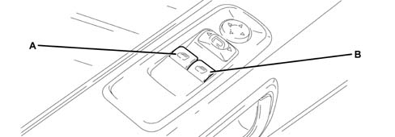
- A - left front window opening/closing;
- A - right front window opening/closing
To open or close the window, press the button; when it is released, the window stops in whatever position it is in at the time.
The driver's window is equipped with the "continuous automatic operation" device (which works when the engine is running) for both lowering and raising the window. Simply press the button briefly to start the travel which continues automatically. the window will stop in the desired position by pressing the button a second time.
Passenger door.
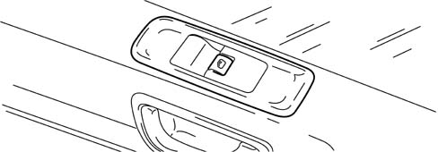
There is a button for controlling the relevant window in the door trim.
Versions with electric front and rear windows
Driver's door.
There are five switches in the driver's door inner trim which operate the opening and the closing of the front and rear windows and the child lock button when the ignition is switched ON.
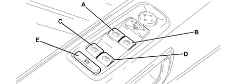
- A - left front window opening/closing;
- B - right front window opening/closing;
- C - left rear window opening/closing;
- D - right rear window opening/closing;
- E - inhibition of operation of electric window buttons located on the rear doors and (where fitted) inhibition of rear sun roof control buttons.
To open or close the window, press the button; when it is released, the window stops in whatever position it is in at the time.
The driver's window is equipped with the "continuous automatic operation" device (which works when the engine is running) for both lowering and raising the window. Simply press the button briefly to start the travel which continues automatically. the window will stop in the desired position by pressing the button a second time.
Passenger door.
There is a button A in the door trim for controlling the relevant window.
Sliding doors.
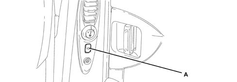
- A - window opening/closing
Press the button to activate the window opening/closing control.
Electric structure of electric windows
The diagram below illustrates the management of the electric windows.
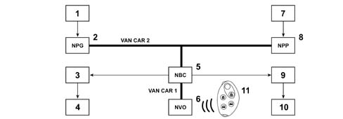
- 1 - control switches on driver's door
- 2 - Driver's Door Node (NPG: acquires the status of the switches, transfers them to the body computer node, operates the electric windows motor)
- 3 - electric window switch on left rear door
- 4 - electric window motor on left rear door
- 5 - Body Computer Node (NBC: authorizes the operation of the front electric windows and manages the operation of the rear electric windows, manages the lighting of the control buttons)
- 6 - Steering Wheel Node (NVO: incorporates the high frequency receiver and manages the signal reception)
- 7 - control switch on the passenger door
- 8 - Passenger Door Node (NPP: acquires the status of the switch, transfers it to the body computer node, operates the electric windows motor)
- 9 - electric window switch on right rear door
- 10 - electric window motor on right rear door
- 11 - Remote control
Electric front windows function
Actions during ascent or descent of the windows:
- pressing one of the opening or closing buttons for the driver or passenger side front windows,
- transmitting the status of the driver or passenger electric window switch to the Door Node via the voltage level,
- detection via the associated door node,
- transmitting the status of the electric window switch by the door node to the NBC,
- transmitting the command by the NBC to the door node for the operation of the front window involved.
The anti-crush function is managed internally by the door modules.
The front passenger electric windows switch lighting remains on when the command is sent from the driver's side unit.
Operation in case of faults
If there is a fault with the VAN, the local control for the electric windows allows the:
- enablement of the driver's electric window control from the driver's door,
- enablement of the passenger electric window control from the passenger door,
- the automatic cycles in progress at the front electric windows are completed.
Electric rear windows function
Glass operation controlled by rear switch
Pressing the opening or closing button for one of the rear switches (if they are not disabled because the child locks are switched on) is detected by the window opening mechanism electronics of the corresponding door.
The door electronics activate the window involved in the desired direction.
Glass controlled by driver's door lock
Pressing one of the opening or closing buttons for the rear windows is detected by the Driver's Door Node (NPG).
The NPG transmits the status of the electric window switch for the door concerned to the NBC.
The NBC momentarily inhibits the rear controls and sends the movement command for the rear window on the basis of the states received and sends the window movement signal to the door involved for the same length of time as the switch is pressed for.
Inhibition of rear controls and child locks (joint LV REAR / TO / Locks)
The inhibitor switch is incorporated in the driver's unit and is shared by the child locks.
The door modules transmits the inhibition/authorization request for the rear electric windows to the NBC:
- in the case of inhibition, the NBC cuts off the supply to the rear switches,
- in the case of authorization, the NBC supplies the rear switches.
Rear glass operating conditions
The rear windows work:
- when the ignition key is in the +ACC or +MAR position,
- in the case of a move to +AVV, the electric window commands are interrupted except for sequential controls in progress,
- for a minute after the interruption of the +ACC
- if the user sends a command from a rear switch, it will be interrupted when the timed period expires if a manual command is involved and, on the other hand, will continue through until the end of a sequential command is involved.
- until the closing, after the opening of the driver's door if this intervenes before the end of the timed preriod.
Operation in case of faults
If there is a fault with the VAN, the local control for the electric windows allows the:
- interruption of the rear passenger electric windows control coming from the driver's door,
- the automatic cycles in progress at the rear electric windows continue until the end,
- rear electric windows command from the rear doors authorized, without taking into account the previous state of the inhibition command.
If there is a problem, the windows cannot be closed automatically if the vehicle has been locked using the remote control.
Central window closing function
When the central locking command is received from the remote control:
- activation, if necessary, of the network by the NBC (appearance of the +VAN),
- the NBC sends the command for the central locking of the windows to the front door modules and interrupts the authorization of the electric rear windows (electric rear windows switch power supply),
- the NBC sends the command for the automatic closing of the left rear window and the right rear window.
If there is a problem, if the NBC does not receive the command from the steering column switch unit it supposes that there has been no request to move the window and, as a result, there is no central control.
Vehicle ventilation function
Press the remote control unlocking button a second time, at the time of unlocking or turning the lock a second time at the time of unlocking, activates the ventilation function (windows completely lowered).
In this case:
- the NBC sends a command for the automatic opening of the windows to the front door modules, then carries out an automatic descent control for the left and right rear windows.
If there is a problem, if the NBC does not receive the command from the steering column switch unit it supposes that there has been no request to move the window and, as a result, there is no central control.
Initialization procedure
If the battery is disconnected or the door nodes or electric window motors are replaced, the following initialization procedure has to be carried out:
CONNECTIONS
Door nodes: driver and passenger
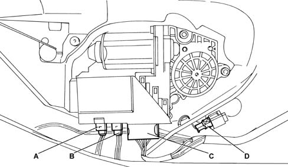
- A - black 6-way connector
- B - brown 6-way connector
- C - black 16-way connector
- D- 2-way connector for direction indicators
Driver's door node
Black 6-way connector.
Pin | FUNCTION |
|---|---|
1 | driver's door mirror motor control (steering wheel node) |
2 | left/right driver's door mirror motor control |
3 | high/low driver's door mirror motor control |
4 | driver's door mirror heating + control |
5 | driver's door mirror heating - control |
6 | not connected |
Brown 6-way connector (with folding door mirrors).
Pin | FUNCTION | Non folding | Folding | Folding + memo |
|---|---|---|---|---|
1 | driver's door mirror position sensor power - control | not connected | not connected | X |
2 | Driver's door mirror folding motor control | not connected | X | X |
3 | Driver's door mirror folding motor control (NVO) | not connected | X | X |
4 | driver's door mirror position sensor power + control | not connected | not connected | X |
5 | left/right driver's door mirror position information | not connected | not connected | X |
6 | high/low driver's door mirror position information | not connected | not connected | X |
Black 16-way connector.
Pin | FUNCTION |
|---|---|
1 | + VAN CAR |
2 | not connected |
3 | VAN Data CAR 2 |
4 | Right front electric window information |
5 | Left front electric window information |
6 | door mirror information |
7 | not connected |
8 | earth |
9 | Driver's unit NVO |
10 | door mirror selector information |
11 | front electric window |
12 | right rear electric window information |
13 | left rear electric window information |
14 | VAN Data B CAR 2 |
15 | driver's unit lighting + control |
16 | + BATT |
Passenger door node
Black 6-way connector.
Pin | FUNCTION |
|---|---|
1 | passenger door mirror motor control |
2 | left/right passenger door mirror motor control |
3 | high/low passenger door mirror motor control |
4 | passenger door mirror heating + control |
5 | passenger door mirror heating - control |
6 | outside temperature information |
Brown 6-way connector (with folding door mirrors).
Pin | FUNCTION | Non folding | Folding | Folding + memo |
|---|---|---|---|---|
1 | passenger door mirror position sensor power - control | not connected | not connected | X |
2 | passenger door mirror folding motor control | not connected | X | X |
3 | passenger door mirror folding motor control (NVO) | not connected | X | X |
4 | passenger door mirror position sensor power + control | not connected | not connected | X |
5 | left/right passenger door mirror position information | not connected | not connected | X |
6 | high/low passenger door mirror position information | not connected | not connected | X |
Black 16-way connector.
Pin | FUNCTION |
|---|---|
1 | + VAN CAR |
2 | not connected |
3 | VAN Data CAR 2 |
4 | electric window descent information |
5 | electric window ascent information |
6 | not connected |
7 | not connected |
8 | Earth |
9 | not connected |
10 | not connected |
11 | not connected |
12 | not connected |
13 | not connected |
14 | VAN Data B CAR 2 |
15 | electric window power supply |
16 | + BATT |
Direction indicators
2-way green connector.
Pin | FUNCTION |
|---|---|
1 | direction indicators control |
2 | Earth |
Driver's door locks
Electric rear windows control unit
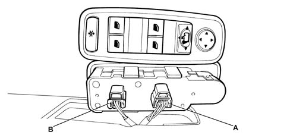
- A - Black 6-way connector
- B - Grey 6-way connector
Control unit without electric rear windows
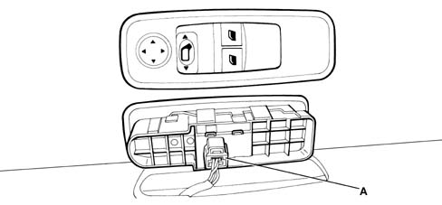
- A - Black 6-way connector
6-way black connector pin out
Pin | FUNCTION |
|---|---|
1 | door mirror information |
2 | control unit lighting + control |
3 | door mirror selector information |
4 | left front electric window information |
5 | driver's unit NVO |
6 | right front electric window information |
6-way grey connector pin out
Pin | FUNCTION |
|---|---|
1 | left rear electric window information |
2 | electric window controls |
3 | right rear electric window information |
4 | not connected |
5 | not connected |
6 | not connected |
Passenger door lock barrel
Control panel on driver's door
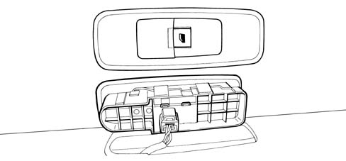
6-way black connector pin out
Pin | FUNCTION |
|---|---|
1 | not connected |
2 | electric window power supply |
3 | electric window ascent information |
4 | not connected |
5 | Earth |
6 | electric window descent information |
Sliding side door window opening mechanism control
The rear electric window control buttons are located on the rear door pillars.
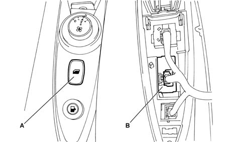
- A - control button
- B - 6-way connector
6-way black connector pin out.
Pin | FUNCTION |
|---|---|
1 | not connected |
2 | rear electric windows inhibition control |
3 | electric window ascent information |
4 | not connected |
5 | Earth |
6 | electric window descent information |
Sliding side door contact surface
10-way black connector sealed on the left and right sides.
Pin | Function |
|---|---|
1 | output unlocking control |
2 | child lock closing control |
3 | child lock opening control |
4 | output locking control |
5 | left/right sliding side door opening/closing motors control actuator |
6 | Earth |
7 | left/right rear electric window descent information |
8 | left/right rear electric window ascent information |
9 | left/right rear electric windows + motor |
10 | left/right sliding side door integral contact lock information |
Side and sliding door window opening mechanism modules
The electric window motor for the rear doors is illustrated in the diagram below
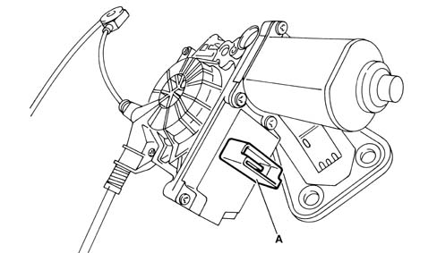
- A - 6-way connector
6-way grey SICMA connector
Pin | FUNCTION |
|---|---|
1 | Rear electric windows ascent information |
2 | not connected |
3 | + Batt |
4 | Earth |
5 | not connected |
6 | electric window descent information |